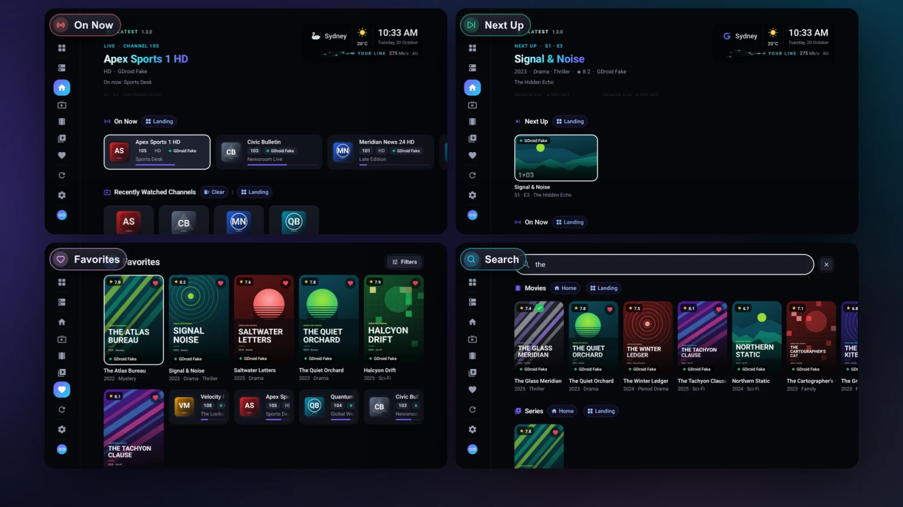

Make Home Yours: Home Rows and Popular Channels
Choose which rows Tachyon's Home shows and in what order — Continue Watching, Next Up, On Now, Favorites, new movies and Popular Channels.

Home is the first page of every service: a big spotlight at the top, then rows of what to watch next. You decide which rows appear and in what order.
The Rows
| Row | What It Shows |
|---|---|
| Continue Watching | Movies and episodes you started and haven't finished. |
| Next Up | The next episode of every show you've been watching. |
| On Now | Channels with a programme on right now: your favorites first, then the ones you watched lately. |
| Favorite Channels | Your ♥ channels. |
| Recently Watched Channels | The live channels you watched last. |
| Your Favorites | Your ♥ movies and series. |
| Recently Added Movies | The newest movies in your library. |
| Top Rated This Year | This year's best-rated movies. |
| New & Updated Series | Shows with new episodes. |
| Recently Added Albums | Desktop New music, when a service has music. |
| Popular Channels | Well-known channels, explained below. Last by default. |
Rows with nothing to show stay hidden by themselves, so a new service's Home stays tidy.
Change the Rows
- Open Settings → Appearance → Home Rows.
- Turn rows on or off, and move them up or down.
- Reset to Default brings back the original set and order.
TV On a TV, the same list is in Easy Settings on your phone, which is quicker for reordering.
Popular Channels
Popular Channels is handy on a big channel list, or a service you've only just added: it picks out the best-known channels for you.
- Well-known channels of your country come first. Tachyon works out the country from your device's time zone and region — nothing is looked up online for it.
- Your favorites and the channels you watch move toward the front.
- Each channel shows once, even when the service lists it in several qualities.
- Adult channels never appear in it.
It sits last on Home by default. Move it up — or hide it — in Settings → Appearance → Home Rows.
The Spotlight
On a TV and a computer, the top of Home shows the card you're on: its picture, title, year, genre, rating and service. On a TV, the clock and the weather sit beside it (Settings → Appearance → Weather on Landing).
Card Menus
Every card has the same menu — hold OK on a TV, long press on a phone, right-click on a computer: Remove (on Continue Watching, Next Up and Recently Watched), Mark as Watched, Add to Favorites, Go to Details and Resume Playing or Play. A channel also has TV Guide and Watch Fullscreen.
Questions and Answers
Why is a row missing from Home?
Either it's turned off in Settings → Appearance → Home Rows, or it has nothing to show yet — Next Up appears after you finish an episode, for example.
Do Home rows mix all my services?
With All Services open, yes: Home combines every enabled service. With one service open, Home shows just that one. See All Services.